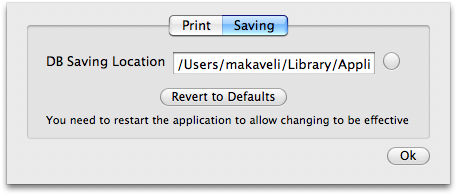

The saving section of the Preferences Panel lets you choose where to save all data.
In this section you can modify the path where data are saved.
By default, data will be saved in a directory only accessible to your user. If you need to use the same data between various users you need to change the path before inserting any data. To set a new directory, you have to press the button near the text field and choose a directory. The path chosen will be set in the text field.
To revert to the default setting, press the proper button.
To apply changes in this section you need to relaunch the application
